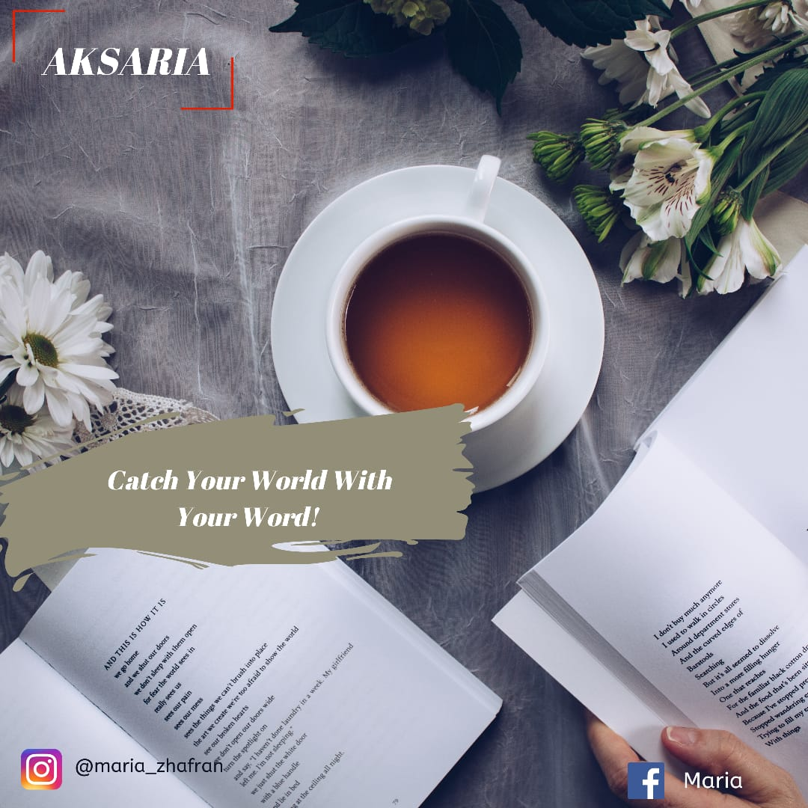

<!DOCTYPE html>
<html lang="en">
<head>
	<meta charset="UTF-8">
	<meta name="viewport" content="width=device-width, initial-scale=1.0">
	<title>AKSARIA</title>
</head>
<body>
	
</body>
</html><!DOCTYPE html PUBLIC "-//W3C//DTD XHTML 1.0 Strict//EN" "http://www.w3.org/TR/xhtml1/DTD/xhtml1-strict.dtd">

<html xmlns="http://www.w3.org/1999/xhtml">
<head>
<meta name="keywords" content="" />
<meta name="description" content="" />
<meta http-equiv="content-type" content="text/html; charset=utf-8" />
<title>AKSARIA</title>
<link href="http://fonts.googleapis.com/css?family=Abel|Arvo" rel="stylesheet" type="text/css" />
<link href="style.css" rel="stylesheet" type="text/css" media="screen" />
<script type="text/javascript" src="http://ajax.googleapis.com/ajax/libs/jquery/1.7.1/jquery.min.js"></script>
<script type="text/javascript" src="jquery.dropotron-1.0.js"></script>
</head>
<body>
<div id="wrapper">
	<div id="header-wrapper">
		<div id="header">
			<div id="logo">
				<h1><a href="#">AKSARIA</a></h1>
				<p>Aksara Maria</p>
			</div>
		</div>
	</div>
	<!-- end #header -->
	<div id="menu-wrapper">
		<ul id="menu">
			<li class="current_page_item"><a href="home.html"><span>Homepage</span></a></li>
			<li><a href="#"><span>Cerita Pendek</span></a></li>
			<li><a href="#"><span>Sajak & Puisi</span></a>
			<ul>
				<li class="first"> <a href="puisi1.html">Tanda(?)Tanya</a> </li>
				<li class="first"> <a href="puisi2.html">1/0</a> </li>
			</ul>
			<li><a href="#"><span>Opini & Artikel</span></a>
			<ul>
				<li class="first"> <a href="op2.html">Student as The Peace Spreader and Technology</a> </li>
			</ul>
			</li>
			<li><a href="#"><span>Quotes Of The Day</span></a>
			<ul>
				<li class="first"> <a href="quotes.html">Quotes1</a> </li>
			</ul>
			<li><a href="#"><span>About</span></a></li>
			<li><a href="contact.html"><span>Contact</span></a>
			<ul>
				<li class="first"> <a href="contact.html">contact me</a> </li>
			</ul>
		</ul>
		<script type="text/javascript">
			$('#menu').dropotron();
		</script>
	</div><!D
	<!-- end #menu -->
	<div id="splash"></div>
	<div id="page">
		<div id="content">
			<div class="contentbg">
				<div class="post">
					<h2 class="title"><a href="#">Welcome to AKSARIA</a></h2>
					<p class="meta">Posted on october 19, 2020
						&nbsp;&bull;&nbsp; <a href="#" class="comments">Comments (64)</a> &nbsp;&bull;&nbsp; <a href="#" class="permalink">Full article</a></p>
					<div class="entry">
						<p>Sejujurnya, menulis adalah suatu yang sangat menyenangkan bagiku, dengan menulis aku bisa mencurahkan semua yang ada dalam benakku. Tapi, ketika aku membagikan tulisanku ke publik ada perasaan campur aduk dalam hatiku. Apakah tulisanku bisa diterima dan dinikmati oleh publik atau sebaliknya.</p>
						<p>Jika menelanjangi lebih dalam, sebetulnya menulis itu sendiri merupakan kata kerja. Ketika seseorang menulis berarti orang tersebut sedang melakukakan kegiatan kerja. Menurut sebagian orang menulis adalah pekerjaan mudah tetapi banyak juga yang mengatakan menulis adalah pekerjaan yang sulit, apalagi bagi orang yang tidak terbiasa menulis. Dari kedua asumsi diatas, aku termasuk kategori orang yang mengatakan pekerjaan menulis adalah hal yang sulit dan membuat kepala mumet, ada benarnya juga itu semua disebabkan karena belum terbiasa dalam hal tulis menulis.</p>
						<p>Bagiku pribadi menulis belum bisa aku jadikan sebuah kebiasaan atau aktifitas yang menjadi rutinitas. Namun ketika mengingat Kata-kata dari Pramoedya Ananta Toer, sungguh sangat menginspirasi aku untuk terus menulis. Yaitu “Orang boleh pandai setinggi langit, tapi selama ia tidak menulis, ia akan hilang di dalam masyarakat dan dari sejarah….Menulis adalah bekerja untuk keabadian".</p>
						<p>Dengan menulis, memaksa kita untuk mengeksploitasi diri. Kenapa? karena kita harus berfikir lebih keras dari biasanya agar bisa menuangkan ide-ide yang ada di otak. Dengan menulis, kita dipaksa untuk bisa mengetahui banyak hal. Seperti, ketika kita akan menulis dengan topik tentang “peradaban dunia”, mau tidak mau kita harus mencari dan membaca literatur yang berhubungan dengan peradaban dunia.</p>
						<p>Untuk saat ini aku memang belum bisa melihat hasil dari tulisan yang sudah aku buat, tetapi sudah cukup menyenangkan ketika tulisan yang aku buat mendapatkan komentar dari publik. Komentar-komentar inilah yang menjadi penyemangat aku untuk akhirnya aku menulis kembali meski tulisanku belum mampu menghipnotis pembacanya agar mau mengikuti apa yang ada dalam pikiranku.</p>
						<p>Tujuan aku menulis adalah semata-mata untuk memerangi dan melawan kemalasan serta mengajak diri aku sendiri agar konsisten untuk terus menulis entah apapun itu. Apa lagi di jaman sekarang ini, setiap orang bebas menuliskan apa yang mereka inginkan. Karena dengan menulis maka kita akan menjadi orang yang pandai dan bermanfaat bagi orang lain yang membaca tulisan-tulisan yang kita buat.</p>
					</div>
				</div>
				<div style="clear: both;">&nbsp;</div>
			</div>
		</div>
		<!-- end #content -->
		<div id="sidebar-bg">
			<div id="sidebar">
				<ul>
					<li>
						<h2>AKSARIA</h2>
						<p>AKSARIA adalah sebuah media berisi coretan-coretan yang dihasilkan oleh pikiran, hati, dan tanganku yang sedikit banyak mulai terbiasa dengan dunia hitam-putih ini.</p>
					</li>
					<li>
						<h2>Cerita Pendek</h2>
					</li>
					<li>
						<h2>Sajak & Puisi</h2>
						<ul>
							<li><a href="puisi1.html">Tanda(?)Tanya</a></li>
							<li><a href="puisi2.html">1/0</a></li>
						</ul>
					</li>
					<li>
						<h2>Opini & Artikel</h2>
						<ul>
							<li><a href="op2.html">Student as The Peace Spreader and Technology</a></li>
						</ul>
					</li>
				</ul>
			</div>
		</div>
		<!-- end #sidebar -->
		<div style="clear: both;">&nbsp;</div>
	</div>
	<!-- end #page -->
</div>
<div id="footer">
	<p>Copyright 2020. All rights reserved. | AKSARIA</p>
</div>
<!-- end #footer -->
</body>
</html>
